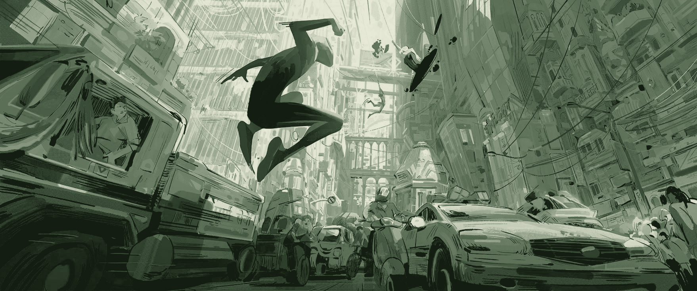
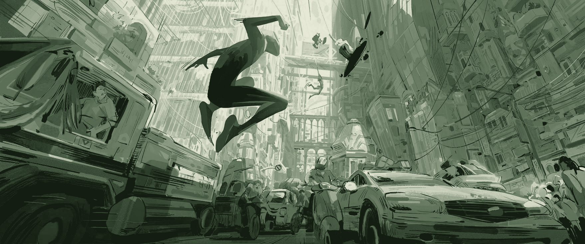

Fan-Favorite Frames: 'Spider-Man: Across The Spider-Verse'
Spider-Man: Across the Spider-Verse isn’t just a visual feast — it’s a landmark in animated filmmaking that pushes the boundaries of what the medium can do. Serving as a sequel to the critically acclaimed Into the Spider-Verse, this installment elevates the franchise with even more daring, genre-bending animation techniques that reflect the unique style and identity of each universe and character. Explore some fan-favorite frames from the film!

![A close-up of Gwen Stacy’s face, half-lit in neon blue and pink tones, stares forward with quiet resolve. She wears her suit with the hood down, strands of blonde hair falling over one eye. Behind her, Jessica Drew in a red-and-black suit with a massive afro and yellow shades, and Peter B. Parker holding his daughter in a baby carrier, appear against a digital-webbed background. The lighting is moody and stylized, with a multiverse-techno aesthetic that blends comic art with digital glitch effects.](Gallery-6.jpeg)